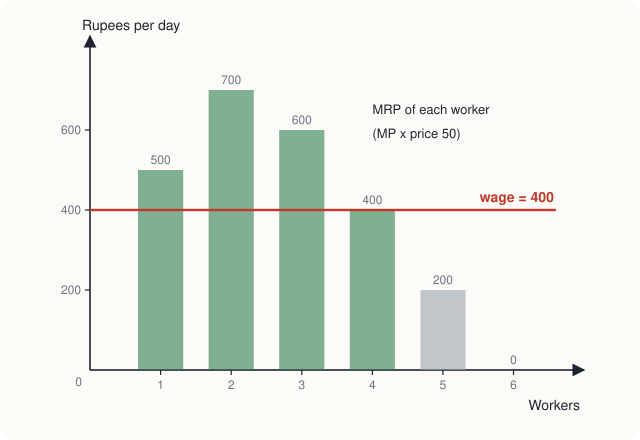
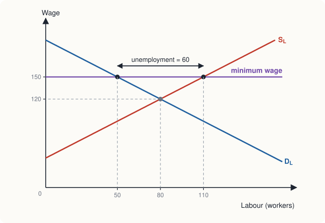
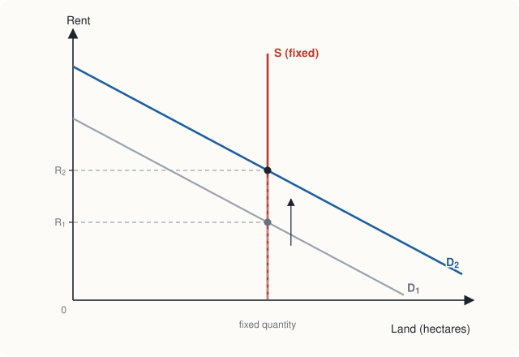

Chapter 11: Factor Markets: Labour, Capital and Land¶
How wages, interest and rent are determined
Learning outcomes
After studying this chapter you should be able to:
- Explain why the demand for a factor of production is a derived demand.
- Calculate the marginal revenue product of labour and use it to find how many workers a firm hires.
- Explain the shape of the labour supply curve, including the possibility that it bends backwards.
- Analyse equilibrium in a labour market, the effects of a minimum wage, and the reasons wages differ.
- Explain monopsony and why a minimum wage can raise employment in a monopsony.
- Use present value to decide whether an investment in capital is worthwhile.
- Distinguish economic rent from transfer earnings, and explain why land earns rent.
11.1 Factor markets and derived demand¶
Chapter 1 introduced the factors of production (labour, capital, land and entrepreneurship) and the incomes they earn: wages, interest, rent and profit. The prices of factors are set in factor markets, and they matter twice over. For firms, factor prices are costs. For households, they are incomes: most people earn most of their income by selling their labour. So the theory of factor markets is also a theory of the distribution of income.
Factor markets differ from markets for goods in one basic way. Households buy goods because the goods themselves give them utility. Firms hire factors not for their own sake but because the factors help produce goods that can be sold. The demand for a factor is therefore a derived demand: it is derived from the demand for the goods the factor helps to produce. The demand for construction workers depends on the demand for buildings; the demand for software engineers on the demand for software. When the demand for a product rises, so does the demand for the factors that make it.
11.2 The demand for labour¶
How many workers should a firm hire? The answer uses marginal analysis once more: hire another worker as long as the worker adds more to revenue than to cost.
The extra revenue a firm gets from hiring one more worker is the marginal revenue product of labour (MRP). For a firm that sells its output in a competitive market at price \(P\), it equals the worker's marginal product times the price:
(For a firm with market power, the price is replaced by marginal revenue: \(MRP_L = MP_L \times MR\).) The extra cost of hiring one more worker, if the firm hires in a competitive labour market, is the wage \(W\).
Example 11.1 How many workers to hire
A workshop making stools has the marginal products of Table 7.1. It sells stools at ₹50 each in a competitive market and can hire as many workers as it wants at ₹400 a day. How many workers should it hire?
Solution.
| Workers | Marginal product (stools per day) | MRP \(= MP \times 50\) (₹) | Wage (₹) | Hire this worker? |
|---|---|---|---|---|
| 1 | 10 | 500 | 400 | yes |
| 2 | 14 | 700 | 400 | yes |
| 3 | 12 | 600 | 400 | yes |
| 4 | 8 | 400 | 400 | yes (just) |
| 5 | 4 | 200 | 400 | no |
| 6 | 0 | 0 | 400 | no |
The workshop hires 4 workers. The fourth adds exactly as much to revenue as to cost; the fifth would add ₹200 to revenue and ₹400 to cost. With 4 workers it produces 44 stools, earning \(44 \times 50 = 2{,}200\) rupees a day, and pays \(4 \times 400 = 1{,}600\) rupees in wages.

The rule is: hire workers up to the point where the marginal revenue product of labour equals the wage, \(MRP_L = W\). If the wage fell to ₹200, the firm would hire 5 workers; if it rose to ₹600, it would hire 3. Along its falling part, the MRP curve shows how many workers the firm wants at each wage: the MRP curve is the firm's demand curve for labour. It slopes down because of diminishing marginal returns.
What shifts the demand for labour¶
- The price of the product. A higher price raises MRP at every level of employment, so the firm hires more. This is the derived nature of factor demand.
- Productivity and technology. Anything that raises the marginal product of workers (better machines, training, better organisation) raises MRP and the demand for labour. A technology can also replace some kinds of workers while making others more productive, so it may reduce the demand for some skills and increase it for others.
- The prices of other factors. If machines become cheaper, a firm may substitute machines for workers (reducing the demand for labour) but may also expand output because its costs have fallen (increasing it). Which effect wins varies.
The market demand for a particular kind of labour is the sum of the demands of all the firms that employ it.
11.3 The supply of labour¶
Each person has a fixed number of hours in a day and must divide them between work (paid) and leisure (everything else, including rest, study, housework and time with family). The opportunity cost of an hour of leisure is the wage forgone. So the decision of how much to work is a choice between income and leisure, which can be analysed with the tools of Chapter 6.
What happens when the wage rises? Two effects pull in opposite directions.
- Substitution effect. A higher wage makes leisure more expensive (each hour of leisure now costs more income), so the worker substitutes work for leisure and works more.
- Income effect. A higher wage makes the worker richer. If leisure is a normal good, a richer person wants more of it, and so works less.
At low wages the substitution effect usually dominates, and a higher wage brings more hours of work. At high wages, the income effect may dominate: a person who already earns a good income may use a pay rise partly to work fewer hours. The individual labour supply curve may therefore bend backwards at high wages. Over the long run, as wages have risen in many economies, average working hours have tended to fall, which is consistent with a strong income effect.
The market supply of a particular kind of labour, however, almost always slopes upwards. A higher wage in one occupation attracts workers from other occupations and draws people into the labour force, and this outweighs any reduction in hours by those already working. The supply of labour to an occupation also depends on the wages in other occupations, the training required, the pleasantness of the work, and the size and skills of the population.
11.4 Wages in a competitive labour market¶
In a competitive labour market, with many employers and many workers, the wage is set where the demand for labour equals the supply, just as the price of a good is set in Chapter 2. Each firm takes this wage as given and hires up to the point where MRP equals it. Changes in demand or supply change the wage: when the demand for software spread across the economy, the demand for software engineers rose and their wages rose; when large numbers of new workers enter an occupation, wages in it tend to fall, other things equal.
Why wages differ¶
If all workers and jobs were alike, competition would bring all wages to the same level. In fact wages differ greatly, for several reasons.
- Compensating differentials. Jobs differ in their non-money features. Dangerous, dirty, unpleasant or night-shift jobs must pay more to attract workers; pleasant or secure jobs can pay less.
- Human capital. Education and training are investments that raise a worker's productivity and so her MRP. Jobs that require long training (surgeons, engineers, airline pilots) pay more, partly to compensate for the cost of the training, including the earnings forgone while studying (Chapter 1).
- Ability and effort. Some people are more able or work harder in a particular job, and are paid more for it.
- Superstar effects. In some fields (sport, entertainment, writing) technology lets the best performer reach millions of people, so a small difference in talent can bring a very large difference in pay.
- Market power of employers (Section 11.5) or of workers, through trade unions, which bargain for higher wages on behalf of their members.
- Discrimination, which is paying people differently, or denying them jobs, because of their sex, caste, religion, race or other characteristics unrelated to their productivity. Discrimination by employers is generally illegal, and competition tends to work against it, since an employer who refuses to hire able workers bears a cost. But it can persist, especially where competition is weak or where customers or co-workers discriminate.
The minimum wage¶
Many countries set a legal minimum wage, a price floor in the labour market (Chapter 4). In a competitive labour market, a minimum wage set above the equilibrium wage raises the pay of those who keep their jobs, but reduces the quantity of labour demanded and increases the quantity supplied, creating unemployment.

In Figure 11.2, the equilibrium wage is ₹120 with 80 workers employed. At a minimum wage of ₹150, employers want only \(200 - 150 = 50\) workers, while \(150 - 40 = 110\) people want jobs. Employment falls by 30, and unemployment of 60 appears.
How large such effects are in practice is one of the most studied and debated questions in economics. The answer depends on how high the minimum wage is relative to typical wages, on the elasticity of labour demand, and on whether employers have market power. Much research has found that moderate minimum wages have small effects on employment, while very high ones reduce it. The next section explains one reason why.
11.5 Monopsony¶
A monopsony is a market with a single buyer. In a labour market, it is a single employer, or one so dominant that it can influence the wage: a large factory in a small town, a mine in a remote area, or the main hospital employing nurses in a region. Where a competitive employer can hire as many workers as it wants at the market wage, a monopsonist faces the upward-sloping market supply curve of labour: to hire more workers, it must raise the wage, and (if it cannot pay different workers different wages) it must raise it for all its workers.
So the cost of hiring one more worker, the marginal cost of labour, is greater than the wage: it is the new worker's wage plus the increase paid to everyone already employed.
Example 11.2 A monopsony employer
A factory is the only employer in a town. The labour supply is \(W = 20 + L\), and the factory's marginal revenue product of labour is \(MRP = 200 - 2L\) (wages in rupees per hour, \(L\) in workers). Compare the monopsony outcome with the competitive one.
Solution. The total wage bill is \(W \times L = 20L + L^2\), so the marginal cost of labour is \(MCL = 20 + 2L\), rising twice as fast as the wage.
Monopsony. The factory hires where \(MCL = MRP\): \(20 + 2L = 200 - 2L\), so \(L = 45\). It pays the lowest wage at which 45 people will work, from the supply curve: \(W = 20 + 45 = 65\).
Competition. If many employers competed for these workers, the wage would be set where supply meets demand (MRP): \(20 + L = 200 - 2L\), so \(L = 60\) and \(W = 80\).
The monopsonist employs fewer workers (45 instead of 60) and pays a lower wage (₹65 instead of ₹80). Each worker's MRP at 45 workers is \(200 - 90 = 110\) rupees, well above the wage.
Now suppose a minimum wage of ₹80 is imposed on the monopsonist. It can no longer pay less than ₹80, and at that wage it can hire up to 60 workers without raising pay further, so its marginal cost of labour is ₹80 for each of the first 60 workers. It hires up to where \(MRP = 80\): \(200 - 2L = 80\), so \(L = 60\). The minimum wage raises both the wage and employment. This is why the effects of minimum wages are an empirical question: in labour markets where employers have market power, a well-chosen minimum wage need not reduce employment, and may increase it.
11.6 Capital and the rate of interest¶
Capital (machines, buildings, vehicles, computers) is a durable factor: it is bought once and yields services over many years. A firm's decision to buy capital is an investment decision, and to make it the firm must compare money spent today with money received in the future.
Present value¶
A rupee today is worth more than a rupee next year, because a rupee today can be lent at interest. If the interest rate is \(r\) per year, ₹100 lent today becomes \(100(1 + r)\) next year. Turning this round, a sum \(X\) received one year from now is worth \(X/(1 + r)\) today, and a sum received in \(t\) years is worth
This is the present value of the future sum, and the process of finding it is called discounting. At an interest rate of 10 per cent, ₹110 a year from now has a present value of ₹100, and ₹121 two years from now also has a present value of ₹100.
The investment decision¶
A firm should buy a piece of capital if the present value of the extra net revenue it will produce is greater than its cost. Equivalently, the net present value (present value of returns minus cost) should be positive.
Example 11.3 Is the machine worth buying?
A machine costs ₹1,000. It will add ₹600 to the firm's net revenue at the end of each of the next two years and then be worthless. Should the firm buy it if the interest rate is 10 per cent? If it is 15 per cent?
Solution. At 10 per cent:
The present value exceeds the cost, so the machine is worth buying: its net present value is ₹41.32.
At 15 per cent:
The present value is now less than the cost, so the machine is not worth buying.
The example shows why investment falls when the interest rate rises: higher interest rates reduce the present value of future returns, so fewer investment projects are worthwhile. The interest rate is the price that balances the demand for funds to invest with the supply of funds from savers. It is also why central banks, by influencing interest rates, can influence the amount firms invest, a subject for macroeconomics.
def present_value(flows, r):
"""Present value of the amounts in flows, received at the end of years 1, 2, ..."""
return sum(x / (1 + r) ** t for t, x in enumerate(flows, start=1))
for r in (0.10, 0.15):
pv = present_value([600, 600], r)
print(f"r = {r:.0%}: PV = {pv:.2f}, NPV = {pv - 1000:.2f}")
r = 10%: PV = 1041.32, NPV = 41.32
r = 15%: PV = 975.43, NPV = -24.57
The same reasoning applies to human capital. A student deciding whether to take a degree compares the present value of the extra earnings it will bring with its cost, including forgone earnings. Lower interest rates, and longer working lives over which to earn the return, make such investments more attractive.
11.7 Land and economic rent¶
In economics, land means all natural resources, and the payment for its use is rent. What makes land special is that its total quantity is fixed: the area of a country, or of a particular city centre, cannot be increased (apart from small amounts of reclamation). Its supply curve is vertical.

With a vertical supply curve, the rent is determined entirely by demand. When the demand for land in a growing city rises, the quantity of land cannot rise, so the whole effect falls on the rent. This is why land in the centres of growing cities becomes extremely expensive. David Ricardo, in the early nineteenth century, argued that rent on farmland is high because the price of corn is high, not the other way round: the rent is a result of the demand for what the land produces.
Economic rent and transfer earnings¶
The idea can be generalised to any factor. A factor's transfer earnings are the minimum payment needed to keep it in its present use: what it could earn in its next best use. Anything it is paid above this is economic rent:
Land in fixed supply with no other use earns only economic rent, since it would be there whatever it was paid. A famous cricketer who earns ₹5 crore a year and whose best alternative would be a job paying ₹10 lakh earns transfer earnings of ₹10 lakh and economic rent of ₹4.9 crore. The rent arises because his particular talent is scarce and cannot be supplied by anyone else.
Economic rent has an important property: a tax on it does not change the quantity supplied. Taxing part of the economic rent of a fixed factor leaves it in its present use, since it still earns more there than anywhere else. This is why some economists, notably Henry George in the nineteenth century, argued for taxing land values: such a tax raises revenue without the deadweight loss of most taxes (Chapter 4).
11.8 The distribution of income¶
The theory of this chapter explains the incomes earned by factors: each factor tends to be paid according to its marginal revenue product, adjusted for market power on either side. This is the functional distribution of income, between wages, interest, rent and profit.
How income is shared among people (the personal distribution) depends also on how much of each factor each person owns. A person who owns land and capital as well as labour receives rent and interest as well as wages. Differences in skills, education, inherited wealth, health and opportunity all shape the personal distribution, and inequalities in these tend to pass from one generation to the next. Governments influence the distribution through taxes, transfers, public education and health care, and laws on wages and working conditions. How much inequality a society should accept is a normative question (Chapter 1); positive economics can describe the trade-offs involved in reducing it.
11.9 Summary¶
- The demand for a factor is a derived demand, depending on the demand for the goods it helps to produce.
- A firm hires labour up to the point where the marginal revenue product equals the wage: \(MP_L \times P = W\). The MRP curve is the firm's labour demand curve.
- A higher wage has a substitution effect (work more) and an income effect (work less); individual labour supply may bend backwards, but market supply to an occupation slopes upwards.
- In a competitive labour market, the wage is set by demand and supply. Wages differ because of compensating differentials, human capital, ability, superstar effects, market power and discrimination.
- A minimum wage above the competitive wage reduces employment in a competitive market. In a monopsony, where the marginal cost of labour exceeds the wage, the employer hires fewer workers at a lower wage, and a minimum wage can raise both wages and employment.
- Investment in capital is worthwhile if the present value of its returns exceeds its cost. Higher interest rates reduce present values and investment.
- Land is in fixed supply, so its rent is determined by demand. Economic rent is the payment above transfer earnings; taxing it does not change the quantity supplied.
11.10 Exercises¶
Exercise 1
A firm sells its product at ₹20 in a competitive market. The marginal products of the 1st to 5th workers are 30, 25, 20, 15 and 10 units a day. How many workers will it hire at a daily wage of ₹350? At ₹250?
Answer
MRPs: ₹600, ₹500, ₹400, ₹300, ₹200. At ₹350 it hires 3 workers (the 4th's MRP of ₹300 is below the wage). At ₹250 it hires 4 workers.
Exercise 2
Explain why a fall in the price of tea leaves would reduce the wages of tea pickers, other things equal.
Answer
The demand for tea pickers is derived from the demand for tea. A lower price of tea reduces the marginal revenue product of each picker (\(MP \times P\)), so the demand curve for pickers shifts left. With the supply of pickers unchanged, their wage and employment fall.
Exercise 3
A consultant's hourly fee rises from ₹2,000 to ₹3,000 and she decides to work fewer hours. Explain this using income and substitution effects.
Answer
The substitution effect of the higher fee makes leisure more costly and on its own would lead her to work more. The income effect makes her richer, and with leisure a normal good, leads her to want more leisure. Since she works fewer hours, the income effect is larger: she is on the backward-bending part of her labour supply curve.
Exercise 4
In the labour market of Figure 11.2 (\(W = 200 - L\) for demand, \(W = 40 + L\) for supply), what happens if the minimum wage is set at ₹100?
Answer
₹100 is below the equilibrium wage of ₹120, so the minimum wage is not binding. The market stays at 80 workers and ₹120.
Exercise 5
A monopsonist faces labour supply \(W = 10 + 2L\) and has \(MRP = 130 - 2L\). Find the employment and wage it chooses, and compare with a competitive market.
Answer
Wage bill \(= 10L + 2L^2\), so \(MCL = 10 + 4L\). Monopsony: \(10 + 4L = 130 - 2L\) gives \(L = 20\), wage \(= 10 + 40 =\) ₹50. Competitive: \(10 + 2L = 130 - 2L\) gives \(L = 30\), wage \(= 10 + 60 =\) ₹70. The monopsonist hires fewer workers at a lower wage.
Exercise 6
A project costs ₹5,000 today and will return ₹3,000 at the end of each of the next two years. Is it worth undertaking at an interest rate of 8 per cent?
Answer
\(PV = 3{,}000/1.08 + 3{,}000/1.08^2 = 2{,}777.78 + 2{,}572.02 = 5{,}349.79\) rupees. This exceeds the cost of ₹5,000, so yes: the net present value is about ₹349.79.
Exercise 7
A singer earns ₹80 lakh a year. Her best alternative is teaching music for ₹6 lakh a year. Find her transfer earnings and economic rent. What would happen if a tax took ₹20 lakh of her earnings?
Answer
Transfer earnings ₹6 lakh; economic rent \(80 - 6 =\) ₹74 lakh. A tax of ₹20 lakh leaves her earning ₹60 lakh after tax, still far more than ₹6 lakh, so she would continue singing: a tax that falls on economic rent does not change the quantity supplied.
11.11 Quiz¶
Check your understanding of Chapter 11
Exercise 1
The demand for labour is called a derived demand because
- it is derived from the supply of labour
- it depends on the demand for the goods that labour produces
- it is set by the government
- workers derive utility from work
Answer
it depends on the demand for the goods that labour produces
Exercise 2
A worker's marginal product is 12 units a day and the product sells for ₹40 in a competitive market. What is her marginal revenue product, in rupees per day?
Answer
480 / ₹480
Exercise 3
A competitive firm hires workers up to the point where
- the wage equals the price of the product
- marginal revenue product equals the wage
- marginal product is at its maximum
- average product equals the wage
Answer
marginal revenue product equals the wage
Exercise 4
The labour supply curve of an individual bends backwards when, at high wages,
- the substitution effect outweighs the income effect
- the income effect outweighs the substitution effect
- leisure is an inferior good
- the demand for labour falls
Answer
the income effect outweighs the substitution effect
Exercise 5
In a monopsony labour market, compared with a competitive one, the employer
- hires more workers at a higher wage
- hires fewer workers at a lower wage
- hires the same number at a lower wage
- pays the marginal revenue product
Answer
hires fewer workers at a lower wage
Exercise 6
At an interest rate of 10 per cent, what is the present value of ₹550 received one year from now, in rupees?
Answer
500 / ₹500
Exercise 7
Economic rent is
- the payment for using land only
- earnings above what is needed to keep a factor in its present use
- the rent paid for a flat
- the same as transfer earnings
Answer
earnings above what is needed to keep a factor in its present use